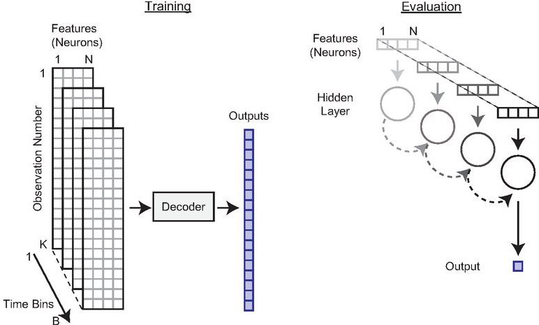

Preprocesamiento de Datos¶
IbioML incluye un sistema robusto de preprocesamiento específicamente diseñado para transformar datos neuronales en formato .mat de MATLAB en estructuras optimizadas para machine learning.
🎯 Visión General¶
El preprocesamiento en IbioML realiza las siguientes operaciones:
- Carga de datos desde archivos
.mat - Incorporación de contexto (información de recompensa)
- Creación de ventanas temporales con historia de spikes
- Filtrado de calidad (rendimiento, duración de trials)
- Limpieza neuronal (eliminación de neuronas con baja actividad)
- Generación de múltiples formatos de datos
📊 Estructura de Datos de Entrada¶
Formato del Archivo .mat¶
Tu archivo .mat debe contener las siguientes variables:
| Variable | Dimensiones | Descripción |
|---|---|---|
neuronActivity |
(time_bins, neurons) | Actividad neuronal binaria |
position |
(time_bins, 1) | Posición del sujeto |
velocity |
(time_bins, 1) | Velocidad del sujeto |
rewCtxt |
(time_bins, 1) | Contexto de recompensa (0/1) |
trialFinalBin |
(trials, 1) | Último bin de cada trial |
dPrime |
(trials, 1) | Medida de rendimiento por trial |
trialDurationInBins |
(trials, 1) | Duración de cada trial |
🔧 Configuración de Parámetros¶
Parámetros Principales¶
from ibioml.preprocessing import preprocess_data
preprocess_data(
file_path='datasets/mi_experimento.mat',
file_name_to_save='data/experimento_procesado',
bins_before=5, # Ventana temporal hacia atrás
bins_after=5, # Ventana temporal hacia adelante
bins_current=1, # Bins del momento actual
threshDPrime=2.5, # Umbral de rendimiento
firingMinimo=1000 # Spikes mínimos por neurona
)
Descripción de Parámetros¶
bins_before y bins_after¶
Define la ventana temporal de contexto:
# Ejemplo con bins_before=3, bins_after=2, bins_current=1
# Para el bin t, se incluyen:
# [t-3, t-2, t-1, t, t+1, t+2] -> ventana de 6 bins total
Recomendaciones
- bins_before=5, bins_after=5: Para capturar contexto temporal amplio
- bins_before=3, bins_after=3: Para análisis más rápidos
- bins_before=0, bins_after=0: Solo información instantánea
threshDPrime¶
Umbral de discriminabilidad para filtrar trials de baja calidad:
- 2.0: Criterio permisivo (incluye más datos)
- 2.5: Criterio balanceado (recomendado)
- 3.0: Criterio estricto (solo trials de alta calidad)
firingMinimo¶
Número mínimo de spikes que debe tener una neurona para ser incluida:
- 500: Para datasets pequeños
- 1000: Valor estándar recomendado
- 2000: Para análisis que requieren alta actividad
📁 Organización de Archivos de Salida¶
Estructura Recomendada¶
data/
├── bins200ms/ # Resolución temporal
│ ├── 5_5_1/ # bins_before_after_current
│ │ ├── 2_5/ # threshold (2.5 -> "2_5")
│ │ │ ├── experimento_withCtxt_onlyPosition.pickle
│ │ │ ├── experimento_withCtxt_onlyPosition_flat.pickle
│ │ │ ├── experimento_withCtxt_onlyVelocity.pickle
│ │ │ ├── experimento_withCtxt_onlyVelocity_flat.pickle
│ │ │ ├── experimento_withCtxt_bothTargets.pickle
│ │ │ ├── experimento_withCtxt_bothTargets_flat.pickle
│ │ │ ├── experimento_onlyPosition.pickle
│ │ │ ├── experimento_onlyPosition_flat.pickle
│ │ │ ├── experimento_onlyVelocity.pickle
│ │ │ ├── experimento_onlyVelocity_flat.pickle
│ │ │ ├── experimento_bothTargets.pickle
│ │ │ └── experimento_bothTargets_flat.pickle
│ │ └── 3_0/ # Otra configuración de threshold
│ └── 3_3_1/ # Otra configuración temporal
└── bins100ms/ # Otra resolución temporal
Ejemplo de Uso con Organización¶
preprocess_data(
file_path='datasets/sujeto_S19.mat',
file_name_to_save='data/bins200ms/5_5_1/2_5/S19_preprocessed',
bins_before=5,
bins_after=5,
bins_current=1,
threshDPrime=2.5,
firingMinimo=1000
)
📦 Archivos Generados¶
Variantes de Datos¶
Cada ejecución de preprocess_data genera 12 archivos organizados en dos grupos principales:
Incluye información de contexto de recompensa:
_withCtxt_onlyPosition.pickle/_withCtxt_onlyPosition_flat.pickle_withCtxt_onlyVelocity.pickle/_withCtxt_onlyVelocity_flat.pickle_withCtxt_bothTargets.pickle/_withCtxt_bothTargets_flat.pickle
Solo información neuronal:
_onlyPosition.pickle/_onlyPosition_flat.pickle_onlyVelocity.pickle/_onlyVelocity_flat.pickle_bothTargets.pickle/_bothTargets_flat.pickle
Estructura de Archivos¶
Cada archivo .pickle contiene una tupla:
Donde: - X: Datos de entrada (actividad neuronal) - y: Variables objetivo (posición/velocidad) - trial_markers: Identificadores de trial para cada muestra
🔍 Formatos de Datos¶
Datos No Aplanados (para RNNs)¶
# Estructura: (samples, time_bins, features)
X.shape = (n_samples, bins_before + bins_current + bins_after, n_neurons)

Uso: Modelos recurrentes (RNN, LSTM, GRU)
Datos Aplanados (para MLPs)¶
# Estructura: (samples, features_flattened)
X_flat.shape = (n_samples, (bins_before + bins_current + bins_after) * n_neurons)

Uso: Modelos no recurrentes (MLP, SVM, etc.)
🔧 Funciones de Utilidad¶
Visualización de Calidad de Datos¶
from ibioml.preprocessing import plot_trial_duration, plot_low_performance
# Cargar datos para análisis
mat_contents = io.loadmat('datasets/mi_experimento.mat')
# Visualizar duración de trials
plot_trial_duration(mat_contents['trialDurationInBins'])
# Visualizar rendimiento por trial
plot_low_performance(mat_contents['dPrime'])
Verificación de Archivos Generados¶
import pickle
# Cargar archivo para verificar
with open('data/experimento_withCtxt_flat.pickle', 'rb') as f:
X, y, trial_markers = pickle.load(f)
print(f"Forma de X: {X.shape}")
print(f"Forma de y: {y.shape}")
print(f"Número de trials: {len(np.unique(trial_markers))}")
print(f"Samples por trial (promedio): {len(trial_markers) / len(np.unique(trial_markers)):.1f}")
⚡ Optimización de Rendimiento¶
Para Datasets Grandes¶
# Reducir memoria usando parámetros más restrictivos
preprocess_data(
file_path='datasets/dataset_grande.mat',
file_name_to_save='data/dataset_optimizado',
bins_before=3, # Ventana más pequeña
bins_after=3,
bins_current=1,
threshDPrime=3.0, # Criterio más estricto
firingMinimo=2000 # Neuronas más activas
)
Procesamiento en Lotes¶
import os
# Procesar múltiples archivos
datasets = ['S19.mat', 'S20.mat', 'S21.mat']
base_config = {
'bins_before': 5,
'bins_after': 5,
'bins_current': 1,
'threshDPrime': 2.5,
'firingMinimo': 1000
}
for dataset in datasets:
subject_id = dataset.replace('.mat', '')
preprocess_data(
file_path=f'datasets/{dataset}',
file_name_to_save=f'data/bins200ms/5_5_1/2_5/{subject_id}_preprocessed',
**base_config
)
print(f"✅ Procesado: {subject_id}")
🚨 Solución de Problemas¶
Errores Comunes¶
KeyError: 'neuronActivity'
Verifica que tu archivo .mat contenga todas las variables requeridas.
MemoryError durante el preprocesamiento
- Reduce
bins_beforeybins_after - Aumenta
firingMinimopara filtrar más neuronas - Procesa en lotes más pequeños
Archivos vacíos después del filtrado
- Reduce
threshDPrime - Verifica la calidad de tus datos de entrada
- Ajusta
firingMinimoa un valor menor
Verificación de Calidad¶
def verificar_preprocesamiento(archivo_pickle):
with open(archivo_pickle, 'rb') as f:
X, y, T = pickle.load(f)
print(f"📊 Resumen de {archivo_pickle}:")
print(f" Muestras: {X.shape[0]:,}")
print(f" Features: {X.shape[1] if len(X.shape)==2 else X.shape[1]*X.shape[2]:,}")
print(f" Targets: {y.shape[1] if len(y.shape)>1 else 1}")
print(f" Trials únicos: {len(np.unique(T))}")
# Verificar valores faltantes
if np.any(np.isnan(X)):
print(" ⚠️ Advertencia: Valores NaN en X")
if np.any(np.isnan(y)):
print(" ⚠️ Advertencia: Valores NaN en y")
print(" ✅ Archivo válido")
# Verificar todos los archivos generados
archivos = [
'data/experimento_withCtxt_flat.pickle',
'data/experimento_onlyPosition_flat.pickle'
]
for archivo in archivos:
verificar_preprocesamiento(archivo)
📈 Próximos Pasos¶
Una vez completado el preprocesamiento:
- Configurar experimentos → Aprende a usar los datos procesados
- API Reference → Documentación detallada de funciones
- Ejemplos → Tutoriales paso a paso